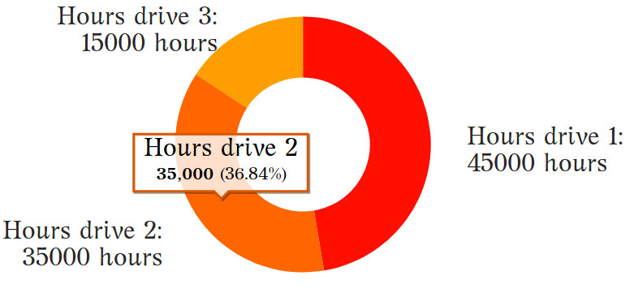

name: inverse layout: true class: center, middle, inverse --- #Circular consumption and production of electronic devices An approach to measuring durability, upgradeability, reusability, obsolescence and premature recycling [comment]: <> (dasd) .footnote[Go to [project site](https://www.ereuse.org)] --- ## What is Circular Consumption of Electronic Devices? [comment]: <> (Consumers use the same electronic devices for the longest time, either internally, or by collaborating with external agents so that these devices are reused and recycled properly, but recycled no prematurely, only when they can no longer be used or reused by anyone else. ) --- layout: false .left-column[ ## Agenda ] .right-column[ ## Measures, Metrics and Indicators *** - Measures: - Hours of device usage [comment]: <> (erwre) - Use value of devices [comment]: <> (4234) - Usage rate of a model [comment]: <> (4234) - Recycling rate of a model [comment]: <> (4234) - Metrics: - Usage hours per device [comment]: <> (4234) - Durability per model in usage hours [comment]: <> (4234) - Performance in usage hours per device [comment]: <> (4234) - Upgradeability [comment]: <> (4234) - Reusability [comment]: <> (4234) - Reusability Potential [comment]: <> (4234) - Premature Recycling [comment]: <> (4234) - Obsolescence of a model - Indicators - Circular Consumption & Production - Discussion and Conclusions [comment]: <> (4234) ] --- template: inverse ## Measures --- layout: false .left-column[ ## Measures ###U: Usage hours per device ] .right-column[ <h2>A measure that indicates the number of hours that a particular device has been in usage.</h2> *** - Capture method: Extracted using a software that inspects the attribute "Power-On Time Count" stored on the memory of the Hard Drive Controller. [comment]: <> (Esta información no se pierde cuando borras el disco duro) <img src="./imgs/harddrive.jpg" alt="drawing" width="205" align="right" style="padding-left: 0px; padding-bottom: 0px;padding-right: 0px;padding-top: 30px;"/> ] --- .left-column[ ## Measures ###U: Usage hours per device ] .right-column[ <h2>A measure that indicates the number of hours that a particular device has been in usage.</h2> *** > **U: Usage hours per device D** > U(D) = `∑` usage hours of all.red[*] hard drives used in D [comment]: <> (More math symbols: https://sites.psu.edu/symbolcodes/codehtml/#math, More online charts in https://live.amcharts.com/new/edit/)  .footnotetext[**Note**: .red[*] In order to be able to count the hours of a device that has had several hard disks, before replacing the disk, this must be erased with a software that publishes the Hours of in the blockchain of eReuse.org. In the example the three discs sum 95.000 hours] ] --- layout: false .left-column[ ## Measures ###Usage hours per device ###Use value per device <img src="./imgs/valueofuse.png" alt="drawing" width="140" height="30" align="left"/ style="padding-left: 0px; padding-bottom: 20px;padding-top: 10px;padding-right: 20px"> ] .right-column[ <h2>A measure (evaluative) that score of the performance or use value .red[*] of a device. </h2> *** [comment]: <> (For example, if the write speed of a hard drive is at percentile 10, this feature would get 10% of the possible points of the hard drive's speed feature. The characteristics of the components (e.g. write/read speed, size) and the components (e.g. disk, memory) are then merged together by weighted harmonic averages. ) - Capture method: A software collects the performance of the devices at component level and scores them according to a comparison with other devices registered in the system. - Formula: Aggregates in a single value the measures for all its components (disc, memory, processor, etc...). The resulting value ranges from 0 to 5, never reaching 5. The use value of a device over time tends to decay as its performance declines to lower percentiles. ] .footnotetext[**Note**: .red[*] We refer by "use value" to the capacity of a device to satisfy a need, in our case of computing (storing, processing, viewing data, etc.), and not to the "exchange value" of a device on the market. ] --- .left-column[ ## Measures ###Usage hours per device ###Use value per device ###Usage rate of a model ] .right-column[ <h2>Measure the rate of devices per model still in usage. </h2> *** > **UM: The Usage rate of a given model M** > UM(M) = (Devices in use of model <sub>M</sub>) `/` (Total of devices of model <sub>M</sub>) [comment]: <> (More math symbols: https://sites.psu.edu/symbolcodes/codehtml/#math, More online charts in https://live.amcharts.com/new/edit/) <img src="./imgs/usage-rate.jpg" alt="drawing" width="500" align="middle" style="padding-left: 0px; padding-bottom: 20px;padding-top: 10px;padding-right: 50px"/> ] --- .left-column[ ## Measures ###Usage hours per device ###Use value per device ###Usage rate of a model ###Recycling rate of a model ] .right-column[ <h2>Measure the rate of devices per model still in usage. </h2> *** > **RM: The Recycling rate of a model M** > RM(M) = (Devices recycled of model <sub>M</sub>) `/` (Total of devices of model <sub>M</sub>) [comment]: <> (More math symbols: https://sites.psu.edu/symbolcodes/codehtml/#math, More online charts in https://live.amcharts.com/new/edit/) <img src="./imgs/recycling-rate.jpg" alt="drawing" width="500" align="middle" style="padding-left: 0px; padding-bottom: 20px;padding-top: 18px;padding-right: 50px"/> ] --- template: inverse ## Metrics --- .left-column[ ## Metrics ###D:Durability per model in usage hours ] .right-column[ <h2>Indicates us the estimated duration of operation in hours that a device model can reach to have</h2> *** > **D: Durability per model M** > D(M) = The 90th percentil of the lifecycle usage hours per model M > [comment]: <> (ccc) .first[ Model | Manufacturer | Model Durability ------------------------------ | --------------------- | ------------- 7000 | Lenovo | 53.534 EB1007 | Asus | 51.145 HP Compaq 6005 | Hp | 44.198 ] ] --- .left-column[ ## Metrics ###D:Durability per model in usage hours ###P: Performance in usage hours per device ] .right-column[ <h2>Indicates the extent to which this device has been used compared to other devices of the same model</h2> *** >**P: Performance in usage hours per device of model M** >P(M) = Usage hours of a device `/` Durability of the model (M) [comment]: <> (ccc) .first[ | Model | Man. | HDD Hours | Model Durability | Performance | |------------------------------------ |------------------- |------------------------ |----------------- |--------------------------------- | | Veriton M400 | Acer | 65.332 | 30.043 | 217% | | HP Compaq 6005 Pro | Hp | 64.228 | 44.198 | 145% | ] ] --- .left-column[ ## Metrics ###D:Durability per model in usage hours ###P: Performance in usage hours per device ###UP: Upgradeability ] .right-column[ <h2>Indicates the potential for improvement that a device has</h2> *** >**UP: Upgradeability of a device** >P(M) = 1 – (Device Use Value `/` Maximum model Use Value) [comment]: <> (ccc) .first[ | Model | Man. | UV | Max UV | Upgradeability | |------------------------------- |-------------- |------------ |------------------------ |--------------------------------- | | Latitude E6300 | Dell | 1,66 | 3,92 | 58% | | HP ProBook 4500 | Hp | 3,93 | 3,95 | 1% | ] .footnotetext[**Note**: .red[*] UV: Use value of a device or scoring of the performance of a device.] ] --- .left-column[ ## Metrics ###R: Reusability <img src="./imgs/dell-latitude-e6440.jpg" alt="drawing" width="150" align="middle" style="padding-left: 0px; padding-bottom: 0px;padding-top: 30px;padding-right: 0px"/> ] .right-column[ <h2>Indicates how reusable a device is</h2> *** >**R: Reusability per device** >R(D) = % devices of a model in usage phase with similar use value ```remark Before getting rid of my laptop Dell Latitude model E6440 with value of use 3. I check that there are 70% of these still in operation. I can safely say that it is 70% reusable. ``` [comment]: <> (ccc) ] --- .left-column[ ## Metrics ###R: Reusability ###RP: Reusability Potential <img src="./imgs/dell-latitude-e6440.jpg" alt="drawing" width="150" align="middle" style="padding-left: 0px; padding-bottom: 0px;padding-top: 30px;padding-right: 0px"/> ] .right-column[ <h2>Indicates how reusable a device is if we upgrade it </h2> *** >**R: Reusability potential per device** >R(D) = % devices of a model in usage phase with upgraded use value ```remark Before discard of my laptop Dell Latitude model E6440 with value of use 3. I check that there are 90% of these with similar or upgraded value still in operation. I can safely say that it is 90% potentially reusable. ``` [comment]: <> (ccc) ] --- .left-column[ ## Metrics ###R: Reusability ###RP: Reusability Potential ###PR: Premature Recycling <img src="./imgs/dell-latitude-e6440.jpg" alt="drawing" width="150" align="middle" style="padding-left: 0px; padding-bottom: 0px;padding-top: 30px;padding-right: 0px"/> ] .right-column[ <h2>Indicates the reusability potential we are discarding if we recycle (destroy) the device </h2> *** >**PR: Premature Recycling per device** >PR(D) = Reusability Potential ```remark I discard for recycling my laptop Dell Latitude model E6440, with a 90% Reusability Potential. I am prematurely recycling 90% of my laptop. ``` [comment]: <> (ccc) ] --- .left-column[ ## Metrics ###R: Reusability ###RP: Reusability Potential ###PR: Premature Recycling ###O: Obsolescence of a model ] .right-column[ <h2>Indicates the dificulty of using a device which, even having good performance, is in low usage</h2> *** >**O: Obsolescence of a model M** >We define a low Usage Rate threshold as around 30%. >O(M) = The maximum difference between the low.red[*] Usage Rate threshold and the top Usage Rate with same Usage Value ```remark I have to discard my laptop model X with value of use 3, it have a Usage Rate of 30%, instead, users of the Y model with the same Value of Use have a Usage Rate by 80%. The obsolescence of my X model is at least of 50% (80%-30%). ``` [comment]: <> (ccc) ] .footnotetext[**Note**: .red[*] A model should become obsolete because its use value is low and not for other reasons; if in a model we find a set of devices that still have use value to be in use, but are discarded, it means that there is some kind of obsolescence that is not a function of the performance of the model. For example: impossibility to upgrade it, repair it, use it with other software, etc ...] --- name: how .left-column[ ## How does it work? ### - Markdown ] .right-column[ A Markdown-formatted chunk of text is transformed into individual slides by JavaScript running in the browser: ```remark # Slide 1 This is slide 1 --- # Slide 2 This is slide 2 ``` .slides[ .first[ ### Slide 1 This is slide 1 ] .second[ ### Slide 2 This is slide 2 ] ] Regular Markdown rules apply with only a single exception: - A line containing three dashes constitutes a new slide (not a horizontal rule, `<hr />`) Have a look at the [Markdown website](http://daringfireball.net/projects/markdown/) if you're not familiar with Markdown formatting. ] --- .left-column[ ## How does it work? ### - Markdown ### - Inside HTML ] .right-column[ A simple HTML document is needed for hosting the styles, Markdown and the generated slides themselves: ```xml <!DOCTYPE html> <html> <head> <style type="text/css"> /* Slideshow styles */ </style> </head> <body> * <textarea id="source"> <!-- Slideshow Markdown --> </textarea> * <script src="remark.js"> </script> <script> * var slideshow = remark.create(); </script> </body> </html> ``` You may download remark to have your slideshow not depend on any online resources, or reference the [latest version](http://remarkjs.com/downloads/remark-latest.min.js) online directly. ] --- template: inverse ## Of course, Markdown can only go so far. --- .left-column[ ## Markdown extensions ] .right-column[ To help out with slide layout and formatting, a few Markdown extensions have been included: - Slide properties, for naming, styling and templating slides - Content classes, for styling specific content - Syntax highlighting, supporting a range of languages ] --- .left-column[ ## Markdown extensions ### - Slide properties ] .right-column[ Initial lines containing key-value pairs are extracted as slide properties: ```remark name: agenda class: middle, center # Agenda The name of this slide is {{ name }}. ``` Slide properties serve multiple purposes: * Naming and styling slides using properties `name` and `class` * Using slides as templates using properties `template` and `layout` * Expansion of `{{ property }}` expressions to property values See the [complete list](https://github.com/gnab/remark/wiki/Markdown#slide-properties) of slide properties. ] --- .left-column[ ## Markdown extensions ### - Slide properties ### - Content classes ] .right-column[ Any occurences of one or more dotted CSS class names followed by square brackets are replaced with the contents of the brackets with the specified classes applied: ```remark .footnote[.red.bold[*] Important footnote] ``` Resulting HTML extract: ```xml <span class="footnote"> <span class="red bold">*</span> Important footnote </span> ``` ] --- .left-column[ ## Markdown extensions ### - Slide properties ### - Content classes ### - Syntax Highlighting ] .right-column[ Code blocks can be syntax highlighted by specifying a language from the set of [supported languages](https://github.com/gnab/remark/wiki/Configuration#highlighting). Using [GFM](http://github.github.com/github-flavored-markdown/) fenced code blocks you can easily specify highlighting language: .pull-left[ <pre><code>```javascript function add(a, b) return a + b end ```</code></pre> ] .pull-right[ <pre><code>```ruby def add(a, b) a + b end ```</code></pre> ] A number of highlighting [styles](https://github.com/gnab/remark/wiki/Configuration#highlighting) are available, including several well-known themes from different editors and IDEs. ] --- .left-column[ ## Presenter mode ] .right-column[ To help out with giving presentations, a presenter mode comprising the following features is provided: - Display of slide notes for the current slide, to help you remember key points - Display of upcoming slide, to let you know what's coming - Cloning of slideshow for viewing on extended display ] --- .left-column[ ## Presenter mode ### - Inline notes ] .right-column[ Just like three dashes separate slides, three question marks separate slide content from slide notes: ``` Slide 1 content *??? Slide 1 notes --- Slide 2 content *??? Slide 2 notes ``` Slide notes are also treated as Markdown, and will be converted in the same manner slide content is. Pressing __P__ will toggle presenter mode. ] ??? Congratulations, you just toggled presenter mode! Now press __P__ to toggle it back off. --- .left-column[ ## Presenter mode ### - Inline notes ### - Cloned view ] .right-column[ Presenter mode of course makes no sense to the audience. Creating a cloned view of your slideshow lets you: - Move the cloned view to the extended display visible to the audience - Put the original slideshow in presenter mode - Navigate as usual, and the cloned view will automatically keep up with the original Pressing __C__ will open a cloned view of the current slideshow in a new browser window. ] --- template: inverse ## It's time to get started! --- .left-column[ ## Getting started ] .right-column[ Getting up and running is done in only a few steps: 1. Visit the [project site](http://github.com/gnab/remark) 2. Follow the steps in the Getting Started section For more information on using remark, please check out the [wiki](https://github.com/gnab/remark/wiki) pages. ] --- name: last-page template: inverse ## That's all folks (for now)! Slideshow created using [remark](http://github.com/gnab/remark).